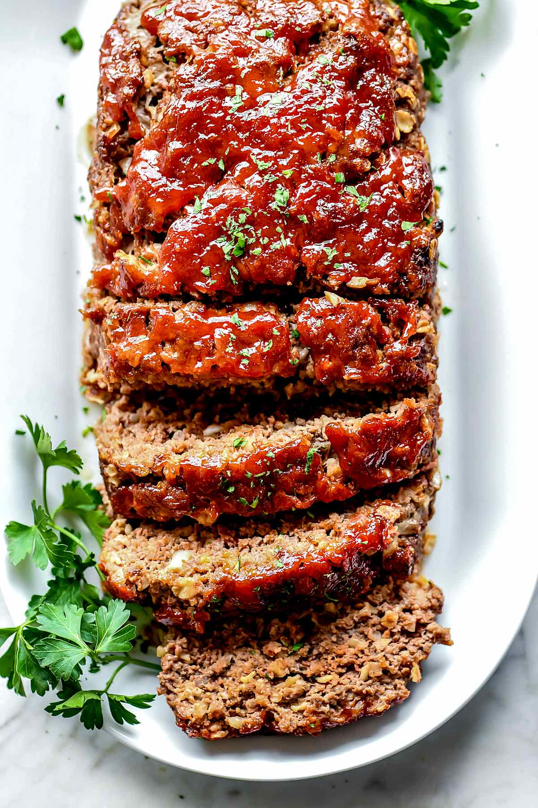

Mom's Legenday Loaf

Description
my moms easy to make meatloaf
Thing you will need:
- 1lbs ground beef
- 1lg onion
- green bellpepper
- 2 cloves garlic
- 1 sleeve ritz crackers
- 1 egg
- 1tbs yellow mustard
- 1tsb hard to say sauce
- pre heat oven to 350 degrees
- finely chop onion, bellpepper,and garlic
- add ground beef to bowl
- crush sleeve of ritz crackers and add to bowl
- add in veggies, mustard, egg, and hard to spell sauce
- roll into loaf
- place on nonstick pan
- cook for 1 hour